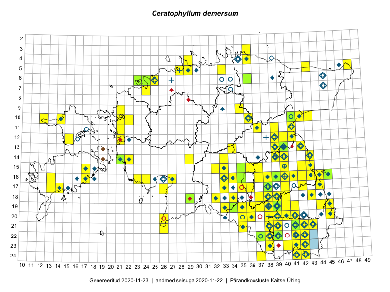

Ceratophyllum demersum
Uuendatud: 2016-12-02
Kaardile koondatud taksonid: Ceratophyllum demersum L.

Kaart põhineb 43 vaatlusel. Taksonit on leitud 39 ruudust.
Kuvatud viited 20 esimesele andmebaasikirjele, ülejäänud PlutoFis
- Katrit Karus, Tõnu Feldmann: 2015-07-28: 20-41: ala
- Tõnu Feldmann, Katrit Karus: 2015-07-28: 20-41: ala
- Tõnu Feldmann, Katrit Karus: 2015-07-30: 19-33: ala
- Tõnu Feldmann, Katrit Karus: 2015-07-31: 16-33: ala
- Katrit Karus, Tõnu Feldmann: 2015-07-31: 15-32: ala
- Katrit Karus, Tõnu Feldmann: 2015-07-31: 15-32: ala
- Katrit Karus, Tõnu Feldmann: 2015-07-29: 13-42: ala
- Katrit Karus, Tõnu Feldmann: 2015-08-03: 13-34: ala
- Katrit Karus, Tõnu Feldmann: 2015-08-05: 13-34: ala
- Ott Luuk, Hannes Pehlak: 2015-06-10: 14-29: ala
- Eeva-Maria Jeletsky, Tarmo Niitla: 2015-05-05: 15-37: ala
- Eeva-Maria Jeletsky, Tarmo Niitla: 2015-06-26: 10-12: ala
- Eeva-Maria Jeletsky, Tarmo Niitla: 2015-06-25: 12-15: ala
- Eeva-Maria Jeletsky, Tarmo Niitla: 2015-07-16: 24-37: ala
- Eeva-Maria Jeletsky, Tarmo Niitla: 2015-08-12: 21-38: ala
- Mari Reitalu, Oliver Parrest: 2015-07-27: 16-13: ala
- Kadi Palmik, Helle Mäemets: 2015-08-13: 18-40: ala
- Kadi Palmik, Helle Mäemets: 2015-07-24: 15-40: ala
- Kadi Palmik, Helle Mäemets: 2015-07-21: 10-36: ala
- Kadi Palmik, Helle Mäemets: 2015-08-19: 22-38: ala